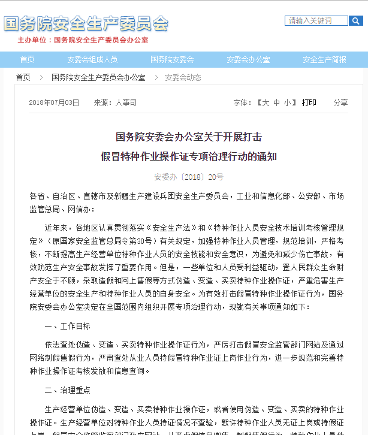

特种安全证
今天要说一说特种设备作业人员证和特种作业操作证的事，首先明确一点，是没有特种安全证或者特种操作证这个概念的，只是为了名字短一点，就定了这么个标题。为了搞清这个问题，先提提下面几部法律法规。
- 《中华人民共和国特种设备安全法》是为加强特种设备安全工作，预防特种设备事故，保障人身和财产安全，促进经济社会发展制定。由全国人民代表大会常务委员会于2013年6月29日发布，自2014年1月1日起施行。其第十四条规定特种设备安全管理人员、检测人员和作业人员应当按照国家有关规定取得相应资格，方可从事相关工作。特种设备安全管理人员、检测人员和作业人员应当严格执行安全技术规范和管理制度，保证特种设备安全。
- 《中华人民共和国安全生产法》是为了加强安全生产工作，防止和减少生产安全事故，保障人民群众生命和财产安全，促进经济社会持续健康发展，制定本法。由中华人民共和国第九届全国人民代表大会常务委员会第二十八次会议于2002年6月29日通过公布，自2002年11月1日起施行。2014年8月31日第十二届全国人民代表大会常务委员会第十次会议通过全国人民代表大会常务委员会关于修改《中华人民共和国安全生产法》的决定，自2014年12月1日起施行。其第二十七条规定生产经营单位的特种作业人员必须按照国家有关规定经专门的安全作业培训，取得相应资格，方可上岗作业。特种作业人员的范围由国务院安全生产监督管理部门会同国务院有关部门确定。
- 《建筑施工特种作业人员管理规定》（建质〔2008〕75号）是为加强对建筑施工特种作业人员的管理，防止和减少生产安全事故，根据《安全生产许可证条例》、《建筑起重机械安全监督管理规定》等法规规章，制定本规定。由中华人民共和国住房和城乡建设部下发，自2008年6月1日起施行。
敲黑板了，特种设备作业人员证与特种作业操作证是两种不同的证件，特种设备作业人员证由质量技术监督部门颁发，特种作业操作证由安全生产监督管理部门和有关行业、领域的安全生产工作实施监督管理的部门颁发。两者没有共同点，不通用，证书全国有效。锅炉、压力容器、压力管道、电梯、起重机械、客运索道、大型游乐设施、场（厂）内专用机动车辆的作业人员及其相关管理人员称为特种设备作业人员。特种作业主要有登高作业、带电作业、动火作业、起重作业等，具体由安全生产监督管理部门和有关行业、领域的安全生产工作实施监督管理的部门规定。上面法规没有列出电力等行业的相关法规，能源局现在统管电力行业了，各能源监管局与安监局已经在推动特种作业（电工）整合工作了。特种作业种类繁多，监管乱象丛生，整合是一件好事。
PS：特种设备作业人员证其实全名叫特种设备安全管理和作业人员证，它还包括特种设备安全管理人员，这也是标题为啥不叫特种操作证的原因，还有安全管理人员。
特种设备作业人员和特种作业人员都需要较高的安全技能和安全意识，才能有效防范生产安全事故发生，避免和减少伤亡事故损失。但是假冒证件屡禁不止，严重危害生产经营单位的安全生产和特种作业人员的自身安全。为此本文将提供一些监管部门指定的查询网址，查询网址将不定期更新，也欢迎来信补充。

~ ~ 不华丽的分割线 ~ ~
建设行业
北京市：北京市住房和城乡建设委员会
http://bjjs.zjw.beijing.gov.cn/eportal/ui?pageId=308888天津市：天津建设教育培训中心
http://www.tjjsjypxzx.com/search/河北省：河北省住房和城乡建设厅
http://zfcxjst.hebei.gov.cn/was5/web/search?channelid=226911山西省：山西省住房和城乡建设厅
http://zjt.shanxi.gov.cn/onlineoffice/onlinesearch.action内蒙古自治区：内蒙古自治区住房和城乡建设厅
http://cert.lwglfw.cn:9898/#/certificate/job辽宁省：辽宁住房和城乡建设厅
http://218.60.144.221/querycard/specialoprationlist.aspx吉林省：吉林省建设工程人员培训管理系统
http://jy.jlsjsxxw.com:8071/ZhengshuSearch.aspx黑龙江省：黑龙江建设网
http://112.103.231.221:10010/aqz/LoginSpec.aspx?AspxAutoDetectCookieSupport=1上海市：上海市建设安全协会
https://ciac.zjw.sh.gov.cn/SpecSkillQuery/SpecSkillQuery/SpecWorkPerList.aspx江苏省：江苏住建厅旗舰店
http://www.jszwfw.gov.cn/col/col140123/index.html
http://58.213.147.240:7001/QLSXHY_TY/MattersCenter/Pages/Housing.aspx?浙江省：浙江省建筑施工特种作业人员管理信息系统
http://220.189.211.52/Tzzy/安徽省：安徽省住房和城乡建设厅
http://dohurd.ah.gov.cn/site/tpl/4071?peopleType=tzzyry福建省：福建省建设人才与科技发展中心
http://www.fjjsrckj.com/portalWeb/fwDzzz/toFwDzzzPage江西省：江西省住建云平台
http://zjy.jxjst.gov.cn/山东省：山东城乡建筑信息网
http://www.sdsjzxxwz.com/?mod=product&col_key=product河南省：河南省住房城乡建设厅
http://www.hnjs.gov.cn/query/view/tzzy湖北省：湖北省建筑特种作业人员考核管理系统
http://zjt.hubei.gov.cn/bsfw/wyc/ggcx/
http://www.etezhong.com/CertificatePrint湖南省：湖南建设人力资源网
http://www.hnjsrcw.com/QueryCert.html
建筑施工特种作业操作资格证书查询
http://113.247.238.148:8083/webapp/zjt/cert/sgcert.jsp广东省：广东建设信息网
http://www.gdcic.net/app/default.html广西壮族自治区：广西住房和城乡建设厅
http://www.gxzjt.gov.cn/wsbs/SearchIFRa.aspx海南省：海南省建设培训与执业资格注册中心
http://www.hnccp.net/ZSCX/tzzy.aspx重庆市：重庆建筑业信用管理系统
http://183.66.171.75:88/CQCollect/Ry_Query/tzry/tzry_List.aspx四川省：四川建设行业数据共享平台
http://202.61.88.188/xxgx/Person/rList.aspx贵州省：贵州省建筑市场监管与公共服务平台
http://42.123.101.210:8088/gzzhxt/云南省：云南省建筑工程质量安全监管网
http://220.163.118.120:18000/cpqsms/newsModule/html/西藏自治区：
暂时无查询页面，请谨慎选用该地区陕西省：陕西省住房和城乡建设厅综合服务中心
http://js.shaanxi.gov.cn:9010/SxApp/share/WebSide/BulletinTZEmpList.aspx?fcol=80001718&bj=2甘肃省：甘肃省住房和城乡建设厅
http://zjt.gansu.gov.cn/view//common/wycx/parent//renyuanxinxichaxun青海省：工程建设监管和信用管理系统
http://139.170.150.135/asite/cloud/index宁夏回族自治区：宁夏建筑市场监管与诚信信息系统
http://www.nxjscx.com.cn/rysj.htm新疆维吾尔自治区：新疆工程建设云
http://jsy.xjjs.gov.cn/dataservice/query/center/staffList
看看上面网址就知道建设行业的特种作业管理，一个字，乱，两个字，真乱。有直接ip的，有域名的；有建设主管部门官网，有行业协会的，等等。另外上面网址还时常变化，无法找到。既然特种作业人员管理关系到生产安全，作为监管部门就不能专业一些？正是这些不作为的管理，给某些人钻了空子。有施工队老板在江南某GDP挺高的城市干活时曾为工人办了些特种作业操作证，操作证上有二维码，扫描可以跳转到当地建委网站上，同时可以查询到证件信息。不过，一个月以后，再查询证件真伪时，网页竟然打不开了。。。
~ ~ 不华丽的分割线 ~ ~
质监行业
1.全国统一证书查询系统：全国特种设备公示信息查询平台
http://cnse.samr.gov.cn 新查询平台
http://www.cnse.gov.cn 将于2019年8月31日停止使用。
地方等待更新中~ ~ ~
~ ~ 不华丽的分割线 ~ ~
安监行业
1.全国统一证书查询系统：特种作业操作证及安全生产知识和管理能力考核合格信息查询平台
http://cx.saws.org.cn 将于2020年1月31日停止访问，
地方等待更新中~ ~ ~
不过在这里吐槽下应急管理部，为啥还有「www.chinachaxungov.com」 和 「http://sgzjs.org/index.html」 这两个查询平台呢，它们也是官方合法的查询平台嘛？这三个网址主页相差无几，仅仅是底部技术支持单位不相同。
原文编辑: EHS资讯
原文链接: https://ehsinfo.cn/2019/08/15/特种安全证.html
版权声明: 转载请注明出处(必须保留作者署名及链接)